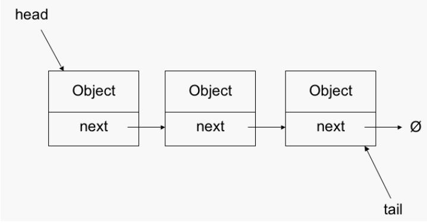

LinkedList

Pros
Cons
Adding and Removing of items is fast as only a pointer has to be updated
Read is expensive as the item has to be searched O(n) to find the item
Flexible size
Task
Shim an implementation of LinkedList.
LinkedList is made by making nodes that have two properties, the value that's being stored and a pointer to the next node in the list.
The LinkedList then keeps track of the head and usually the tail
A Node has two properties, value and next.
length - integer - How many elements in the list
push - function - accepts a value and adds to the end of the list
pop - function - removes the last value in the list and returns it
get - function - accepts an index and returns the value at that position
delete - function - accepts an index, removes value from list, collapses, and returns removed value
Delete
value: [a] [b] [c] [d] next: [ ]-> [ ]-> [ ]-> [ ]-> null
-> delete is called on index 2 (value 'c')
-> grab the head (value 'a')
-> loop through the nexts until you get the index before the one to be deleted (value 'b')
-> change the the next of index 1 to be the next of index 2
-> decrement length
-> return the value of the deleted node
Notes
LinkedLists stores items sequentially with each item storing a pointer to the next
LinkedLists are made of nodes, each node has at least 2 properties:
1 for the link to the next node
1 for the value of what needs to be stored
Important data structure in languages that don't have dynamic arrays. (JS arrays are dynamic, we don't need to set a size)
When to use: If you need to do a lot of adds and deletes.
Use cases: Most recently used cache (keep the older ones) or least recently used, hash tables are using linked list under the hood.